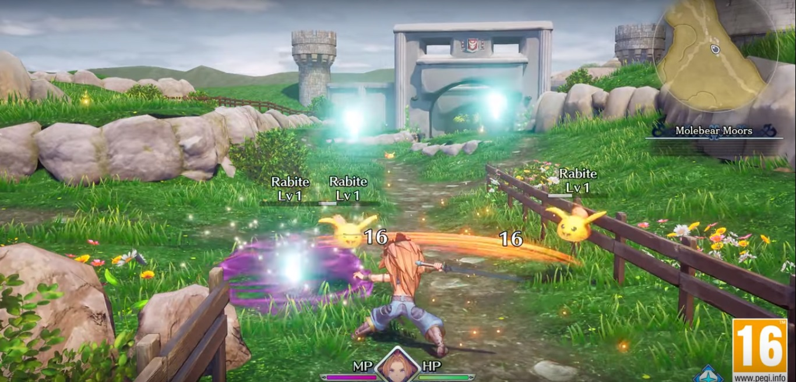
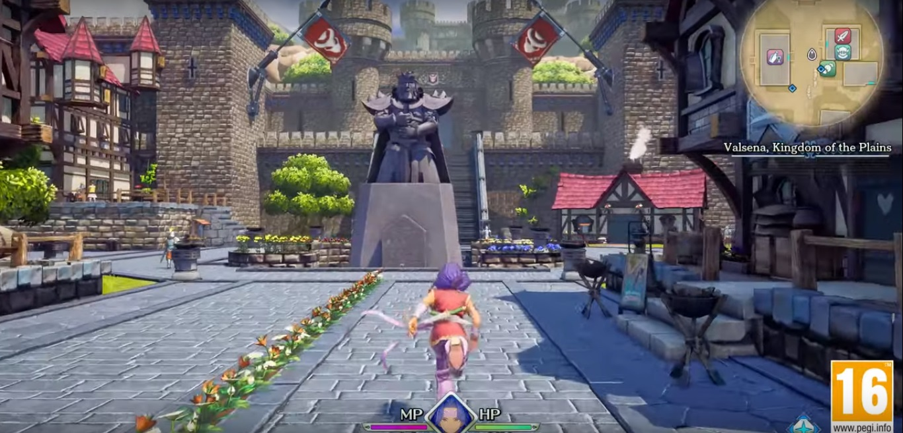
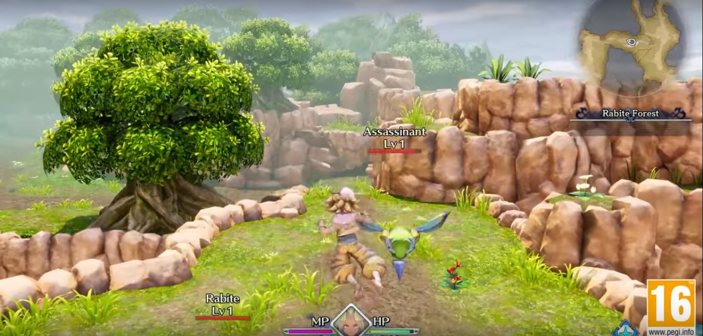
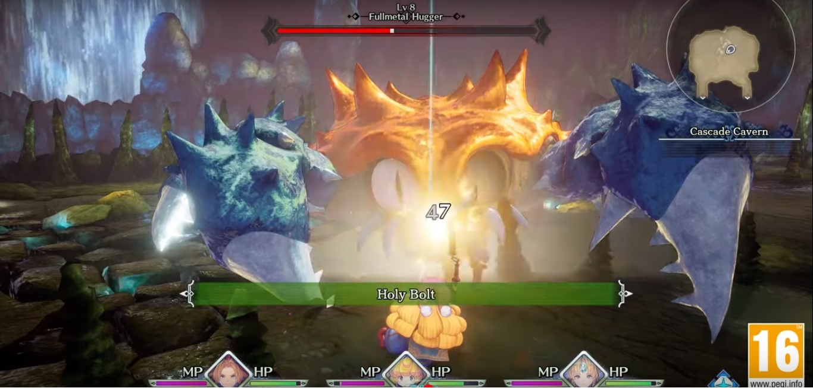
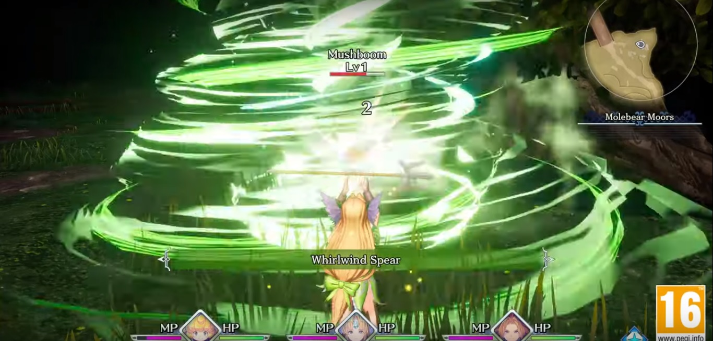
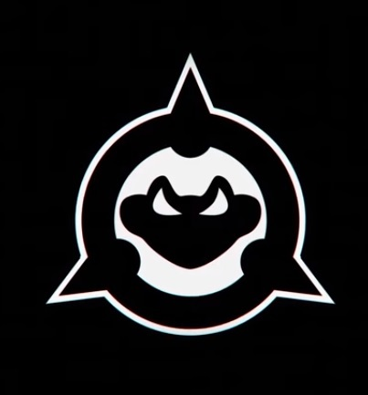
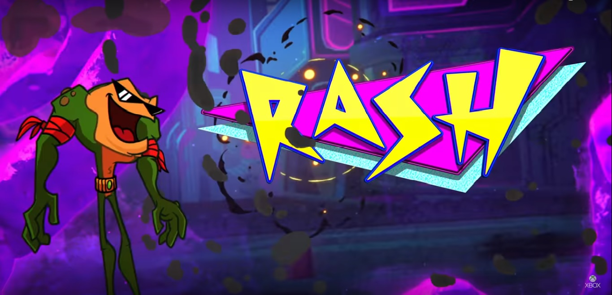
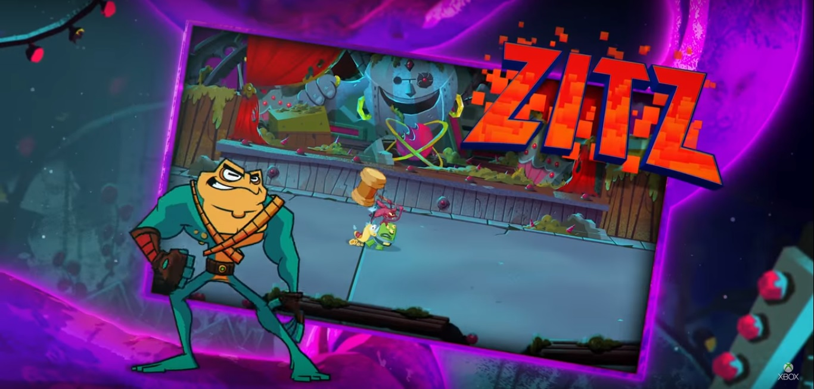
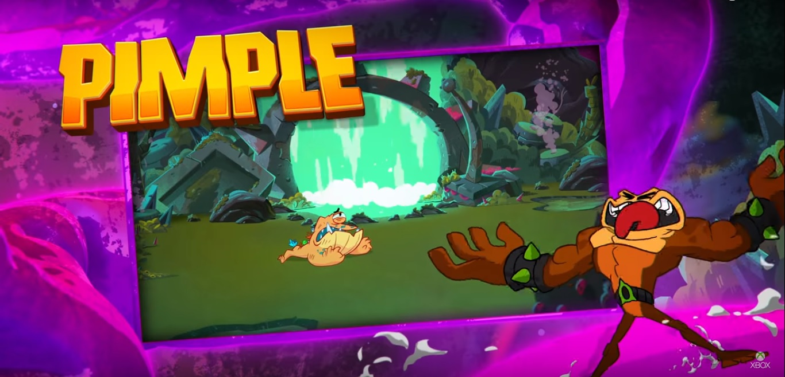

Trials of Mana: Nintendo E3 2019
El día 11 de Junio del presente, durante la conferencia del E3 de Nintendo, se reveló el trailer que para muchos podría significar el regreso de una gran saga.
Me estoy refiriendo en este caso, al trailer de Trials of Mana. Esta saga mítica ya... y digo mítica porque se siente como si tanto square como los creadores de consolas, se hubieran olvidado de su existencia.
Dentro de todo lo que ha tenido que sufrir esta saga, por Nintendo dio una luz de esperanza o por lo menos un atisbo de intención de querer recuperar la franquicia.
Por el momento se especula que Trials of Mana para Nintendo Switch, vendría siendo un remake de uno de los juegos anteriores del mismo nombre, puede ser que también lo conozcas como Seiken Densetsu 3. De ser este el caso, algunos de las clases accesibles podrían ser:

Guerrero

Ladrón

Hombre Bestia

Sacerdote

Valkiria
Así pues solo queda esperar que Squarenix, encargados del desarrollo de este juego, pongan todo el empeño y cariño que esta saga requiere para revivir y poder convertirse quizás en una de las franquicias insignia de Nintendo, como lo es ya por ejemplo Fire Emblem.
Como dato adicional, viendo que el remake será partiendo de la tercera entrega, puede que juegos como Legend of Mana (PS One) o Children of Mana (Nintendo DS), sean ignorados a futuro dentro de la cronología; esto ha sucedido antes en varias franquicias, una de las más famosas por hacer esto es Castlevania.
Por el momento solo queda esperar para poder ver y jugar al resultado final del Trials of Mana (Remake), sin más información por el momento se despide El Mayu.
Battletoads 2019: Microsoft E3 2019
El día Domingo 9 de Junio del presente, se llevó a cabo la conferencia del E3 correspondiente a Microsoft. Para abrir la conferencia eligieron un clásico de clásicos que llevaba tiempo perdido del radar; me refiero nada más y nada menos que al mítico Battletoads.

Seguro que a más de uno le dio uno que otro calambre en el estómago al ver este logo y escuchar el sonido del botón start de 1991.


Tal como en el primer juego de la saga podremos jugar con Rash y Zigz. En este punto tengo que comentar que el color de Rash está bastante bien, pero el de Zigz se ve algo extraño, comparándolo con la primera entrega creo yo, que el color de Zigz era amarillo y en esta nueva entrega es más bien algo así como turquesa.

Ahora con respecto a Pimple, uno esperaría que fuese algo más amenazante ya que según las referencias de varias webs es el más grande y poderoso de los Battletoads.
Más allá de que algunos aspectos no me hayan convencido del todo, es innegable que el regreso de esta franquicia es una alegría tanto para jugadores de la vieja escuela (como es mi caso) como para jugadores de nueva generación.
Según mi punto de vista y tomando como referencia el trailer promocional, lo que se puede esperar es un Bet'em up de acción frenética, de esos en los que vas siempre corriendo, reventando el paisaje y haciendo volar enemigos a diestra y siniestra.
Por el momento dejo hasta aquí mi analisis, ya que el gameplay solo deja apreciar apenas un poco más de lo que he comentado. Saludos y hasta otra, se despide El Mayu.